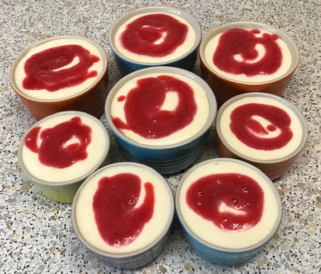

White chocolate mousse
- Put in heat proof bowl over simmering water, making sure bowl does not touch water
- 250g chopped white chocolate
- 80ml milk
- 1 tsp vanilla extract
- Heat until chocolate just melted, stirring regularly
- Cool for 5 mins
- Add 3 egg yolks one by one and beat well after each addition
- Whip 300ml double cream into soft peaks and fold into chocolate mixture until just combined
- Whisk 3 egg whites until peaks form
- Fold egg whites into chocolate mixture in two batches with large spoon
- Divide mousse into 6 or 8 pots leaving space to cover
- Swirl puree from 250g raspberries over mousses
- Cover and chill for 4 hours until set
